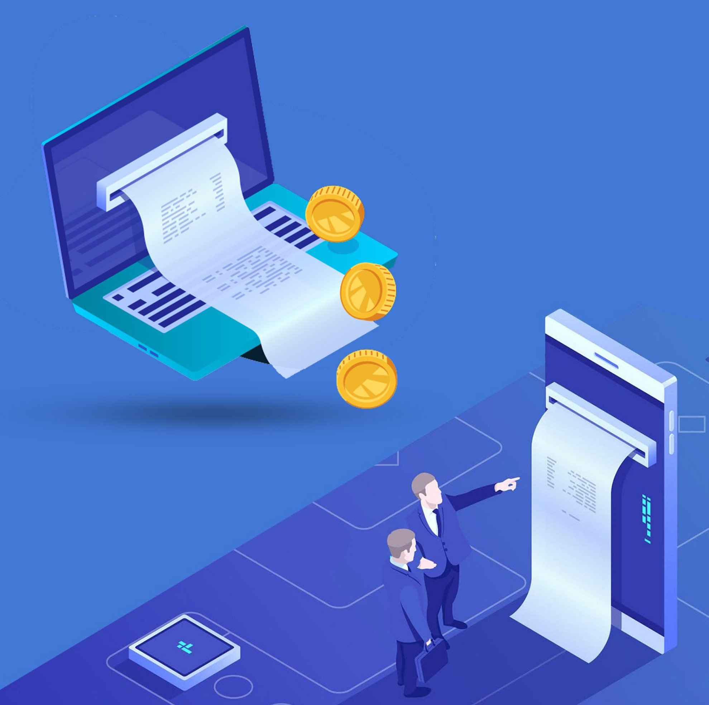
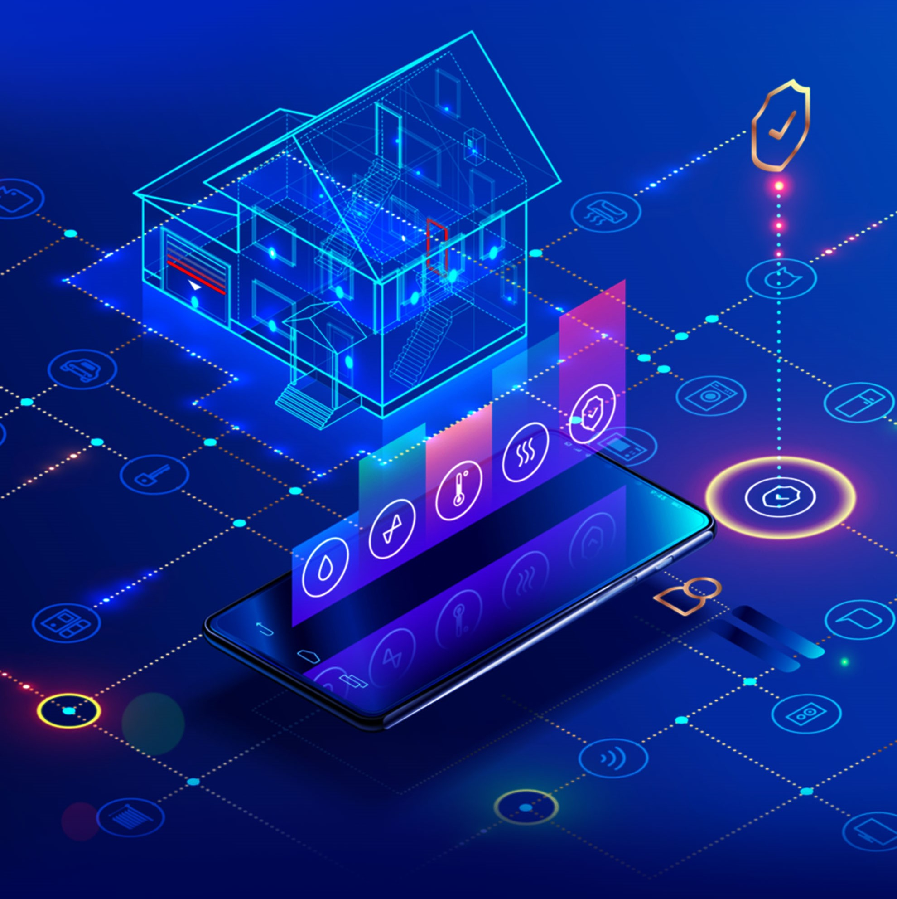
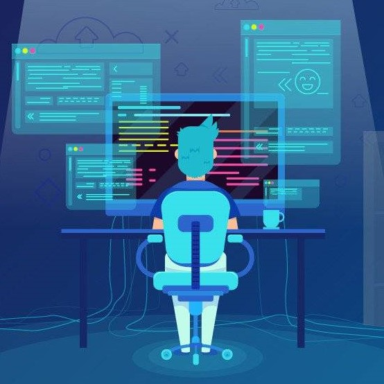

Billing System
Whether you have a service-based business or a brick-and-motor business either in an emerging state or in an established state an efficient billing system is always required to fulfill your day-to-day billing tasks.
We create a billing system for your business to give you the access to a wide variety of useful tools and shortcuts that strengthen your cash flow, minimize billing errors, and free up valuable time for other business activities.
Our billing systems offers small business owners the ability to track billable products and services. It can also be bundled in with other programs or high value features like integrating with different payment gateways or many more, if you have some specific requirements, but can also be offered as a standalone service.
CMS System
If you have a small business where everything revolves around the budget or you just don’t want to invest a lot while creating a website for your business by paying developer huge amount of money then you should invest in CMS (Content Management System) which allows you to create a website without any coding knowledge.
We create a CMS system for your business to help you in creating, managing and modifying the content on your website and you don’t have to go into the technical details.
Our CMS systems are easy to use, they have good number of design options, data portability is very easy, also allow extensions and addons etc. or any other features as per your requirement.
We offer a CMS system that will handle all the basic infrastructure stuff for you so that you can focus more on the forward-facing parts of your website.
CRM System
In any business customer’s relation with the company is the highest value thing. To achieve that you should invest in CRM (Customer Relation Management) which allows you to manage and analyze customer interaction and data throughout the customer lifecycle.
We create CRM system for your business that will improve the customer service relationships and assist in customer retention and drive sales growth. It will compile customer data across different channels between the customer and the company.
We can also include some special features like giving the customer-facing staff members detailed information on customer’s personal information, purchase history, buying concerns or preferences and many more according to your requirements.
E-Commerce System
If you have an E-Commerce business or you want to start one you should have a portal in order to conduct the interactions and transactions with customers and suppliers instantly, enabling a more connected and intuitive functioning.
We create E-Commerce portals for your business to make ordering much easier and more reliable, with full visibility and 24/7 order placement. For instance, suppliers can accept orders through their web portal, providing necessary features such as automated status updates. The size of the order or the consumer does not matter in it, this enables businesses to increase the efficiency and effectiveness of transactions.
An E-Commerce portal is not only a sales channel in our eyes; rather, it is a component of supply chain, product, and consumer data management.

IOT System
IoT (Internet of things) has already found use in practically every industry and has a huge potential economic effect of $3.9 trillion to $11.1 trillion annually by 2025.
IoT Protocols: Interaction between sensors, devices, gateways, servers, and user applications is what powers the Internet of Things. However, there are Internet of Things (IoT) standards and protocols to adhere to in order for an IOT system to operate and transfer data in the online mode only when devices are securely linked to a communication network.
Data Collection: IoT systems function successfully because IoT applications create enormous volumes of data, which makes data gathering and processing important. Therefore, careful consideration must be made for how data will be gathered, kept, or processed within a given setting.
Mobile Application Development
There are several platforms on which to create mobile applications, and we are specialists in some of the most cutting-edge ones, allowing us to create unique, effective, and interesting ones. We create appealing, user-friendly, & well iOS & Android mobile applications using top-tier, cutting-edge technology. We have met the demands of our clients from a variety of sectors for B2B, B2E, and B2C mobile apps. From the initial concept to interactive prototypes, our professionals create apps that will aid in understanding the demands of the market and its potential consumers. Then, our development team creates integrated online platforms and strong, secure, scalable mobile applications.

Web Development
Our capability to provide the best & most affordable bespoke web design & development solutions is something we take great pleasure in. We produce distinctive websites, online apps, admin interfaces, web tools, etc. for big and small enterprises alike throughout the world. It is the custom development of your website from the scratch by professional web developers & designers.
We gave life to user's concepts. We are able to offer solutions like UI/UX designs, the front end & back end of web applications, enterprise software, content management systems, e-commerce platforms, etc. We create beautiful, safe, but scalable online solutions that meet real business objectives & leave a lasting impact on clients.